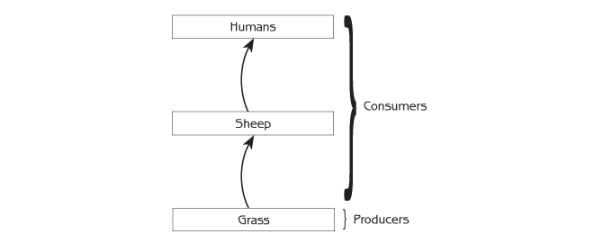
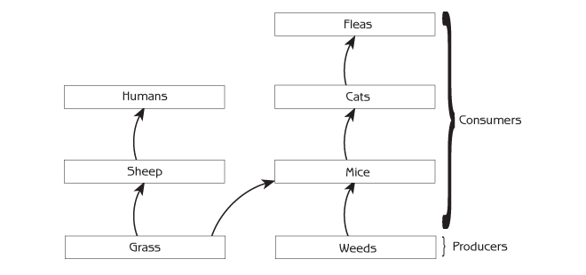
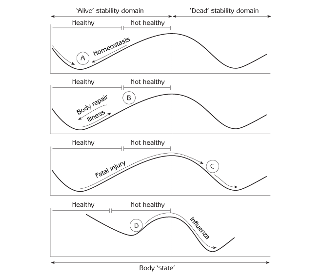
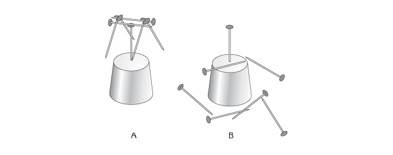
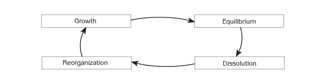
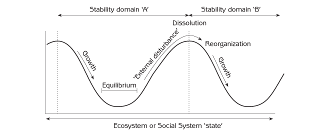

Human Ecology
Basic Concepts for Sustainable Development
Chapter 4: Ecosystems and Social Systems as Complex Adaptive Systems
Ecosystems and social systems are complex adaptive systems: complex because they have many parts and many connections between the parts; adaptive because their feedback structure gives them the ability to change in ways that promote survival in a fluctuating environment.
How can we understand human - ecosystem interaction when social systems and ecosystems are so overwhelmingly complex? The answer lies in emergent properties: the distinctive features and behaviour that ‘emerge’ from the way that complex adaptive systems are organized. Once aware of emergent properties, it is easier to ‘see’ what is really happening. Emergent properties are cornerstones for comprehending human - ecosystem interactions in ways that provide insights for sustainable development.
This chapter will begin by explaining the concept of emergent properties. It will then describe three significant examples of emergent properties in detail:
- Self-organization.
- Stability domains.
- Complex system cycles.
Later chapters will describe additional emergent properties of ecosystems and social systems.
Hierarchical Organization and Emergent Properties
Biological systems have a hierarchy of organizational levels that extends from molecules and cells to individual organisms, populations and ecosystems. Every individual plant and animal is a collection of cells; every population is a collection of individual organisms of the same species; and every ecosystem consists of populations of different species. The most important levels of biological organization for human ecology are populations and ecosystems.
Each level of biological organization from molecules to ecosystems has characteristic behaviours which emerge at that level. These distinct behaviours, called emergent properties, function synergistically at each level of organization to give that level a life of its own which is greater than the sum of its parts. This happens because all the parts fit together in ways that allow the system as a whole to function in a manner that promotes its survival. Because the parts are interconnected, the behaviour of every part is shaped by feedback loops through the rest of the system. A mixture of positive and negative feedback promotes growth and change in the system as a whole.
Emergent properties are easiest to perceive in individual organisms. In simple organisms such as jellyfish, we can identify basic emergent properties such as growth, development of different tissues and organs, homeostasis, reproduction and death. The richness of expression of emergent properties increases with the complexity of the organism. For example, ‘vision’ is an emergent property, and so is the perception of colour. Visual images are not a property of the component cells in organisms; the experience of visual images emerges at the level of an entire organism. Emotions such as fear, anger, anxiety, hate, happiness and love are also emergent properties.
Populations and ecosystems are not organisms, but some of their emergent properties are analogous to the emergent properties of organisms because they can be described by words such as ‘growth’, ‘regulation’ or ‘development’. The sigmoid curve for population growth, population regulation, genetic evolution and social organization are examples of emergent properties at the population level of organization. They are not properties of the individuals in a population. They emerge as special properties of populations because every individual in a population is affected by what happens in the population as a whole. Taking population regulation as an example, individual plants and animals have the potential to live a long life, producing a large number of offspring. However, the actual survival and reproduction of each individual depends on how many other individuals are in the population and how this number compares to carrying capacity. If the total population overshoots carrying capacity, some individuals in the population are compelled to die from lack of food. The result is population regulation within the limits of carrying capacity - an emergent property of populations.
What about emergent properties of ecosystems? The component parts of ecosystems are all limited by their connections to other parts of the ecosystem. The carrying capacities for all the species together in an ecosystem’s biological community are an emergent property of the ecosystem as a whole because the food supply for each species is a consequence of what happens in other parts of the ecosystem. The food supply for each species depends, firstly, on the ecosystem’s biological production and, secondly, on the amount of the ecosystem’s biological production that the food web channels to that particular species. More emergent properties of ecosystems will be described in later chapters.
Components at one level of organization interact primarily with other components at the same level. They do so by responding to information that emerges from those components. Protein molecules in the cell interact with other molecules in ways that respond to the structure and behaviour of the molecules, not the atoms of which they are composed. Proteins have an intricate three-dimensional structure that emerges at the level of the molecule and provides the basis for interaction with other molecules. When cats hunt mice, they do not process information on all the parts of a mouse in order to detect it. Instead, they respond to key features that emerge at the level of the whole mouse: body size; large ears; long thin tail, etc. They do not process information about the cellular structure of these features. Mice respond to cats in a similar way.
One emergent property of ecosystems and social systems is counterintuitive behaviour. They sometimes do the opposite of what we expect. The construction of public housing in the United States during the decades after World War II is an example. The purpose of public housing was to reduce poverty by providing decent housing to low-income people at a price they could afford. However, cheap housing encouraged unskilled people to move from rural areas to cities even when there were no jobs. The large number of unemployed people turned public housing into ghettos of poverty. The effect of public housing was the opposite of its intended purpose because what happened depended not only on the housing but also on feedback loops through other parts of the social system.
The story of forest fire protection provides an example of counterintuitive behaviour in ecosystems. Forest managers tried to reduce fire damage by putting out fires. The result was even more fire damage. Details of this story are in Chapter 6.
Ecosystems and social systems are sometimes counterintuitive because they are not easily understood by people whose main existence is at a different level of organization - the level of an individual inside the ecosystem and social system. This difference is one important reason why people find it difficult to predict the ultimate consequences of their actions on ecosystems. Emergent properties of our own individual level of organization - our bodies, our consciousness and our direct interactions with people and other parts of the ecosystem - are obvious to us, but emergent properties at higher levels of organization are not so obvious. The difficulties in perceiving emergent properties at a higher level of organization can be illustrated by imagining a ‘thinking’ red blood cell in a person’s blood stream. From its travels around the body, the red blood cell is quite familiar with the different parts of the body - the brain, the eye and so on - but it is very difficult for it to comprehend vision, thoughts, emotions and activities that come from the body as a whole. People, as a small part of ecosystems and social systems, have the same difficulty comprehending ecosystems and social systems.
Emergent properties of social systems
Emergent properties of the human social system are important for human ecology because they shape the ways in which people interact with ecosystems. One emergent property is distortion of information when errors accumulate as information passes through a social network. This emergent property underlies the party game of ‘telephone’, which starts by giving a secret message to one person in a group. That person whispers the message to a second person, and the message is whispered from one person to another. After everyone has been told the message, the first person and last person tell everyone the message as they understood it. To everyone’s amusement, the last person’s version of the message is typically incorrect in many ways, even though the last person is not a liar.
Another emergent property is denial, refusal to recognize or accept the truth when it conflicts with existing beliefs. Selective filtering of information helps to protect existing belief systems of individuals and shared belief systems of society. For example, European nations with global empires were blind to the oppression and exploitation of colonialism. They preferred to see colonialism in terms of a belief system that ascribed nobler motives to colonialism - dissemination of ‘superior’ European culture, science and technology, economic progress and religious salvation for subjected peoples. In a similar fashion, it is not unusual for governments and powerful people who profit from unsustainable logging of tropical forests to believe that small-scale peasant farmers are primarily to blame for deforestation, even though local farmers generally use forest resources in an ecologically sound fashion.
During the 1950s and 1960s, some ecologists tried to warn the public about the impending dangers of the human population explosion and environmental degradation. Most people, including government officials and business leaders with considerable power, would not believe it, even though the facts were clear. Society’s belief system at that time had great confidence in the ability of science, technology and the free market economy to ensure continuous progress. Most people considered warnings about impending environmental problems to be extremist. It took several decades and numerous environmental disasters for people to start accepting that the problems were real. This denial had a major effect on social system - ecosystem interaction because so much time was lost before people started to take the environment seriously. This costly form of denial continues as some people, including influential politicians, persist in doubting the reality of global warming despite overwhelming evidence.
Bureaucracies provide examples of emergent properties in human social systems. One emergent property is that bureaucracies are not very effective at dealing with unusual situations. This is because bureaucracies use standard operating procedures to operate efficiently on a large scale. Bureaucracies may be effective for routine matters, but they may not do so well with unusual situations because their procedures are not designed for those situations. Another emergent property of bureaucracies is that they often do things that are contrary to their mission. Competition between different parts of a bureaucracy causes each part to do whatever is necessary for its own survival (for example, maintaining its share of the budget) in competition with other parts of the bureaucracy, even if the actions are useless or counterproductive for the agency’s objectives. These are characteristics of a bureaucracy as a whole. They do not derive from the characteristics of individuals in the bureaucracy, who are usually conscientious workers. Their jobs may compel them to do things that make no sense to them personally.
Self-Organization
Why do all the different parts of an ecosystem fit together so well? What is responsible for organizing all the parts, their functional connections and resulting feedback loops, in a way that allows everything to function together? The amazing answer is that ecosystems organize themselves, and the same is true for social systems. They organize themselves by means of an assembly process resembling the well-known process of natural selection in biological evolution.
Self-organization of biological communities
The core of ecosystem organization resides in an ecosystem’s biological community - all the plants, animals and microorganisms living in an ecosystem. The particular species in the biological community at a particular place are drawn from a larger pool of species living in the surrounding area. Selection of those species, and their organization into a food web, happens by a process known as community assembly. Assembly in this context means ‘joining or fitting parts together’. The community assembly process is an emergent property of ecosystems.
The biological community at any particular place is a consequence of past arrivals of various species of plants, animals and microorganisms. Whenever a new species arrives at a site, it will survive and establish a population only if births are initially greater than deaths. Its population will not survive if deaths are greater than births. If the newly arriving species survives, its population will grow exponentially until it reaches carrying capacity as shown in Figure 2.9. In this way, the new species joins the biological community at the site.
There are three community assembly rules that determine whether the population of a newly arriving species will survive at a site. To survive and become part of the ecosystem, a newly arriving species must satisfy the following conditions:
- It is adapted to the physical conditions at the site and can survive throughout the year.
- The site has the right kind of food, and there is enough food and water for the newly arriving plant or animal species to grow and reproduce. (Births must exceed deaths when the population is small.) For plants, the food is water and mineral nutrients in the soil, plus sunshine. For animals, the food is particular species of plants or animals that they can eat. A newly arriving species will not survive if its food supply is reduced too much by competing plants or animals already at the site and utilizing the same food sources.
- If the site already has animals that can eat the newly arriving species, the newly arriving species must have the ability to avoid being eaten too much. Deaths cannot exceed births.
The following story shows how community assembly works. Imagine a coastal island, 1 kilometre in diameter, where all the plants and animals are killed by a fire. Only grass survives. Soon grass is growing everywhere on the island. The farmer who owns the island decides that he wants to raise sheep there. The carrying capacity of the island for sheep is 50 sheep, so the farmer puts 50 sheep on the island.
Figure 4.1 shows the simple food chain on the island after the farmer stocks the island with the sheep.

The island is 1 kilometre from the mainland coast, where there are hundreds of species of plants and animals that can occasionally float to the island on, for example, a log. Different species of plants and animals are transported to the island at various times during the first few years after the fire. Each species is added to the food web if it meets the three rules for population survival listed earlier. It is best to follow this story by sketching the new food web whenever another species is added.
- Tree seeds arrive on the island. Sheep love to eat emerging seedlings and saplings. Will the trees survive?
- Weed seeds arrive on the island. The weeds are unpalatable to the sheep. Will the weeds survive? What happens to the quantity of grass on the island? What happens to the carrying capacity for sheep?
- Mice arrive on the island. The mice eat grass and weeds. Will the mice survive on the island? What happens to the quantity of grass and the carrying capacity for sheep?
- Rabbits arrive on the island. The rabbits eat grass. Will they survive? What happens to the carrying capacity for sheep?
- Foxes arrive on the island. They eat mice. They cannot eat all of the mice because mice are small enough to hide. Foxes love to eat rabbits. They quickly kill all of the rabbits because rabbits are too large to hide. Will the foxes survive? What happens to the number of mice? What happens to the rabbits? What happens to the grass and the carrying capacity for sheep?
- An insect that eats the leaves of trees arrives on the island. Will it survive?
- Cats arrive on the island. The cats, which are better at catching mice than foxes, reduce the number of mice to such an extent that the foxes do not have enough food. However, even a small number of mice is enough for the cats to survive. What happens to the foxes? What happens to the carrying capacity for sheep?
- Cat fleas arrive on the island. Will they survive?
Figure 4.2 shows the biological community after all of these plants and animals arrived on the island. The biological community is organized as a food web. Food webs are another emergent property of ecosystems. Each species of plant, animal or microorganism has a particular role in the food web - its ecological niche - defined primarily by its position in the web (ie, other species in the biological community that it uses as food and other species that use it as food). Ecological niches are also defined by physical conditions such as the annual cycle of temperature and moisture in the microhabitat in which a species lives.

It is possible to see that some of the plants and animals that came to the island are not in the diagram because they did not survive. They did not fit in with the biological community that existed at the time of arrival. This is why biological communities always have plants and animals that fit together with each change in the food web. The rules that decide whether a new species survives also apply to species that are already in the biological community. Rabbits disappeared from the island when predators (foxes) arrived that killed too many rabbits for the population to survive. The foxes disappeared with the arrival of cats, which were superior competitors in the food web existing at that time. Finally, the share of the island’s biological production for the farmer (ie, grass for his sheep) changed as the story progressed. This story will continue for many years as new plants and animals arrive at the island and the number of species in the food web gradually increases.
This simple example was only about plants and animals, but microorganisms such as bacteria and fungi, though less conspicuous, are equally significant in real ecosystems. Every plant and animal provides habitat and sustenance for millions of bacteria. Some of the bacteria are harmful, but most are harmless or even essential for the plant or animal’s survival. Microorganisms are also major actors in soil food webs. A typical litre of soil contains billions of bacteria whose central role in ecological cycles makes them essential for the survival of the ecosystem as a whole.
The biological community created by the assembly process is partly a matter of chance. It depends, in part, on what species arrive on the island and when they arrive. If we imagine ten islands with the same mainland source of plants and animals, the progression of biological communities on each island can be very different. Some of the communities are similar to one another, though not exactly the same. Others may be completely different. However, the chance element in community assembly does not mean that every combination of plants and animals is possible. In fact, all of the biological communities that can be created are a minuscule subset of all possible combinations because community assembly will only admit those plants and animals that fit together in a functional food web.
The community assembly process is not restricted to islands. It happens everywhere all of the time. Every place in the world is an ‘island’ on which plants and animals continually arrive from nearby areas. Biological communities in most regions in the world contain hundreds of species of plants and animals, and all the plants and animals in each region fit together functionally.
Self-organization of social systems
All complex adaptive systems are self-organizing. The assembly process that was illustrated by the island story is one of the main ways that complex systems, including social systems, organize themselves.
The way the assembly process works in social systems can be illustrated by commercial activities. When someone starts a new business, the survival of the business can depend upon rules such as the following.
- The business is adapted to the community.
- There is demand for the products or services of the business.
- The business can generate enough customers to produce a profit. There are not competing businesses that provide the same product or service to such an extent that there are insufficient customers or the price of the product or service is too low to make a profit.
- The business has a good supply source of what it needs to make its products or provide its services. The cost of these inputs is not larger than the income of the business.
If you compare these rules with the assembly rules for biological communities at the beginning of this chapter, it is possible to see the similarity between the two sets of rules and how the same process that organizes ecosystems can also apply to social systems.
The assembly process for ecosystems and social systems is similar to biological evolution. Biological evolution is based on genetic mutations, which may or may not survive the process of natural selection. (Each genetic mutation is a ‘new arrival’.) Biological evolution is slow because genetic mutations are random changes that are usually detrimental. Only occasionally are mutations beneficial enough to survive natural selection.
Human cultures also evolve. The mutations for cultures are new ideas. New ideas survive if they fit with the rest of the culture and prove useful. Whether or not an idea survives can depend on the situation. A new idea may survive successfully in one particular culture at one particular time and place, but the same idea may fail to survive in a different culture at a different time and place because it does not fit. Human cultural evolution can be much faster than biological evolution because cultural mutations are not random events like biological mutations. Cultural mutations are ideas that people develop to solve problems, so cultural mutations frequently fit the culture well enough, and function well enough, to survive and become part of the culture.
Stability Domains
Ecosystems and social systems have a tension between forces that resist change (negative feedback) and forces that promote change (positive feedback). Negative feedback keeps essential parts of the system within the limits required for them to function together, while positive feedback provides the capacity to make large changes if necessary. Negative feedback may dominate at some times and positive feedback may dominate at other times, depending on the situation. As a result, ecosystems and social systems may stay more or less the same for long periods, but they can also change very suddenly. The changes can be like a ‘switch’. ‘Switching’ is an emergent property of all complex adaptive systems, including ecosystems and social systems.
Figure 4.3 shows the switch of a human body from life to death. Homeostasis, in the form of hundreds of negative feedback loops normally keeps every part of a healthy body more or less as it should be, but the body’s state changes when a person is sick or injured. State is everything about the body’s condition at a particular moment - temperature, blood pressure, blood sugar concentration, hormone concentrations, breathing rate and hundreds of other things. The horizontal axis of the diagram represents the body’s state. Each point along the horizontal axis represents a person’s condition (ie, everything about his body) at a particular moment. Points that are close together represent similar states, and points that are further apart represent states that are very different from each other.

The location of the ball represents the body’s state at a particular time, and movement of the ball represents a change in the body’s state from one time to another. A short distance of movement represents a small change, and a longer distance represents a larger change. In this metaphor, the gravitational force on the ball represents natural forces of change in the complex system. Movement of the ball down the ‘hill’ represents change due to the homeostatic mechanisms that keep the body in a healthy state. The ball moves back and forth a bit as random events change the condition of the body, but the ball usually stays near the bottom of the hill (A). If a healthy person experiences an external disturbance such as disease or injury, the disturbance forces the ball up the hill to an unhealthy state (B). The body usually eliminates the infection or repairs the injury and everything returns to normal. The ball rolls back to the bottom of the hill, and the body is again healthy as in A. Whether sick or healthy, the body remains in the ‘alive’ part of the diagram (the ‘alive’ stability domain) because homeostasis keeps it that way.
The diagram has another stability domain: ‘dead’. A severe illness or injury can change the body so much that the ball is pushed over the top of the hill from the ‘alive’ stability domain to the ‘dead’ domain (C). The body no longer functions as before; new feedback loops change it to a very different state. Body temperature drops to the temperature of the surrounding environment, muscles become rigid and hundreds of internal processes come to a stop. As the body is changed by natural processes following death, the ball rolls to the bottom of the hill in the ‘dead’ stability domain. There are no natural forces to push the ball back to the ‘alive’ domain. The body does not return to life, even when the outside disturbance has passed.
Traumatic events such as illness or injury are not the only way that a body can change. A body can change gradually because of internal processes such as ageing. As a person’s health declines with age, the shape of the hill changes so the bottom of the hill moves closer to the boundary between ‘alive’ and ‘dead’ (D). As homeostatic mechanisms weaken, the hill becomes less steep, so it is easier for a disturbance to push the ball the short distance over the top of the hill and into the ‘dead’ domain. Hip injuries and diseases such as influenza or pneumonia, which seldom kill young people, can be fatal to the elderly.
A simple puzzle illustrates how stability domains are a consequence of a system’s design, that is, the organization of its component parts. The challenge is to balance six nails on the head of a vertical nail. The solution gives a simple and stable arrangement of the nails that is far from obvious (see Figure 4.4A). This represents one stability domain. If any of the six nails is moved out of its relationship with the other nails, the entire configuration collapses and changes to a different stability domain, such as in Figure 4.4B. Just as the arrangement in Figure 4.4A may be the only viable solution to the puzzle, the ways that the potential component parts of a biological community can fit together to form a functional and viable ecosystem are also relatively few compared to the enormous number of possibilities.

What is the state of a social system? What are its stability domains? Social-system state is everything about a society at a particular place and time - culture, knowledge, technology, perceptions, values and social organization. It is constantly fluctuating in some ways, while remaining more or less the same in other ways. Negative feedback loops keep social systems within stability domains imposed by particular cultural, political and economic systems while processes such as cultural evolution gradually change the shape of the domains. Social systems sometimes experience major switches from one stability domain to another. The breakup of the former Soviet Union is a notable example. Glasnost and Perestroika were ‘disturbances’ that set in motion a multitude of feedback loops that propelled the Soviet Union from a ‘single nation’ stability domain to a ‘separate nations’ domain. There are numerous social-system switches underway in the developing world as diffusion of the global economy stimulates drastic social and cultural changes.
What is the state of an ecosystem? Ecosystem state is the sum total of every part of an ecosystem: the population number of every species of plant, animal and microorganism; the quantity or concentration of every substance in the air, soil and water; and every structure built by people. Ecosystem state changes as any of these parts alter with the passage of time. The ‘hillsides’ in an ecosystem stability diagram represent natural ecological processes that maintain the integrity of an ecosystem by keeping it in the same stability domain. The ‘hillsides’ also represent processes such as community assembly, which systematically change ecosystems (see ecological succession in Chapter 6).
External disturbances for ecosystems are traumatic events, such as hurricanes, fire and the introduction of exotic animals or plants (such as the water hyacinth introduced to Lake Victoria in Chapter 1), which completely change an ecosystem, moving it from one stability domain to another. The impacts of human activities can also be an external disturbance for ecosystems. Ecosystem stability domains will have a role in the next chapter and will appear throughout the rest of this book. They are important for sustainable development because human activities can set in motion changes that switch an ecosystem irreversibly from a desirable stability domain to an undesirable one.
Complex System Cycles
Ecosystems and social systems change in two ways:
- Progressive change due to internal self-organizing assembly processes (biological community assembly and cultural evolution).
- Sudden change from one stability domain to another because of external disturbance (ie ‘switch’).
The progressive and sudden changes combine to form a complex system cycle (see Figure 4.5). ‘Growth’ is a time dominated by positive feedback and self-organizing assembly processes. It is a time of expansion and increasing complexity. ‘Equilibrium’ is a time of stability. The system has reached a high level of complexity and connection between its parts. Negative feedback predominates. The system may become rigid and seemingly indestructible, but stagnation and a lack of flexibility may eventually make the system vulnerable to destruction by an external disturbance. ‘Dissolution’ is when the system is destroyed by an external disturbance. Positive feedback generates dramatic change, and the system falls apart. It is pushed out of its stability domain. ‘Reorganization’ is a time when the system begins to recover from falling apart. It is a creative time when change can take a variety of possible directions; that is, the system has the possibility of moving into a variety of new stability domains. ‘Chance’ can be important to the way a system reorganizes, determining which new stability domain it enters. The growth stage that follows reorganization depends on the course initiated during reorganization.

Figure 4.6 shows how an ecosystem or social system changes from one stability domain to another in the course of a complex system cycle.

Populations have complex system cycles. The growth stage of a population is a time of exponential increase. A population is regulated at or below carrying capacity during the equilibrium stage. Populations of many species of plants and animals can stay in the equilibrium stage for a long time, but the populations of other species experience frequent ‘crashes’ because they overshoot their carrying capacity. Population crashes are the dissolution stage. For example, an insect population that feeds on a plant may multiply rapidly (growth), spreading over the plant and eventually killing it. The insects fly away when the plant dies (dissolution). Most of them die of starvation because they fail to find another suitable host, but a few find a plant on which they can start a new population (reorganization). In the case of humans, people typically reorganize by moving to a new place if their population overshoots local carrying capacity.
Ecosystems also have complex system cycles because community assembly follows a complex cycle. The island story began with dissolution when fire destroyed the previous biological community, a forest. Survival of the grass and the farmer’s herd of sheep on the island were ‘reorganization’ that set the course for subsequent growth of the biological community as various plants and animals came to the island. Growth will continue as more plants and animals arrive, and some are added to the biological community. Eventually, when nearly all possible niches in the food web are occupied, it will be difficult for newly arriving species to survive; the biological community will stay the same (equilibrium) until a new disturbance, such as fire or a developer’s bulldozer, causes a dramatic change (dissolution). Complex system cycles in ecosystems will be described in greater detail as ecological succession in Chapter 6.
Social systems have complex system cycles that range in scale from a small part of society (for example, a club) to entire nations. Just as the scale varies, the time period of a cycle can vary from a few months to years or centuries. Historical periods of nations provide examples of long-term cycles. The Meiji Restoration in 19th-century Japan was a time of dissolution of the Tokugawa shogunate and reorganization to restore power to the emperor. There was then a period of growth (acquiring new political institutions and industrialization), followed by equilibrium (the military government of Imperial Japan). The defeat of Japan at the end of World War II led to dissolution of the military government, which was followed quickly by reorganization as Japan adopted new social institutions such as Western democratic processes. Japan started to rebuild its economy and became a world economic power (growth). The ‘bubble economy’ that Japan experienced with economic growth faded away as Japan’s economy moved into equilibrium. Some of Japan’s economic and political institutions were discarded (dissolution) as Japan reorganized its international economic strategy in response to industrialization and entry into the global market by other Asian countries.
Policies can change dramatically during social system cycles. Policies are well developed and often rigid during equilibrium. During dissolution, people question existing policies and reject them as inadequate. New policies, even radically new frameworks, are formulated during reorganization. Details of the new policies are worked out and filled in during growth.
People and governments often make the mistake of assuming that the existing situation will last a long time. If they are in a growth stage, they think that they can continue to grow forever, and they are surprised and disappointed when growth is no longer possible. If they are in an equilibrium stage, they suppose that the stability and control of that stage will last forever, and they are surprised when an unexpected disaster makes things fall apart. When things fall apart (dissolution), they may think ‘it is the end of the world’, but reorganization will put them once again on a path toward normalcy.
An effective society has the ability to function during all four stages of the complex system cycle. An effective society is not only able to function well in the present stage, it is also ready to deal with very different conditions that will come with the next stage. Effective societies have the capacity to grow when the opportunity arises, and they have the capacity to function on a sustainable basis when growth is no longer possible. When things fall apart, as sooner or later they always do, effective societies have the ability to move quickly to reorganization and new growth.
Things to Think About
- With ‘switches’, something stays the same because of negative feedback, and then it changes quickly to something else because of positive feedback. Think of examples of switches at various levels in your social system (family, neighbourhood, national, international).
- Think of examples of complex system cycles in your family, your neighbourhood, your nation’s history and world history. Be explicit about each stage of the cycle (growth, equilibrium, dissolution, reorganization).
- Consider the story of the island. Beginning with Figure 4.1, draw a series of food web diagrams to show the new food chain whenever a new species is added to the island’s biological community. You should finish with a diagram like the food web in Figure 4.2.
- What are some emergent properties of your:
- family social system;
- neighbourhood social system;
- school or workplace social system; and
- national social system? - Keep in mind that emergent properties arise from the whole system. They do not come simply from the parts; they derive from the way that the parts are organized together.
- Think of examples of denial in your personal life. What are some examples of denial in the society in which you live?